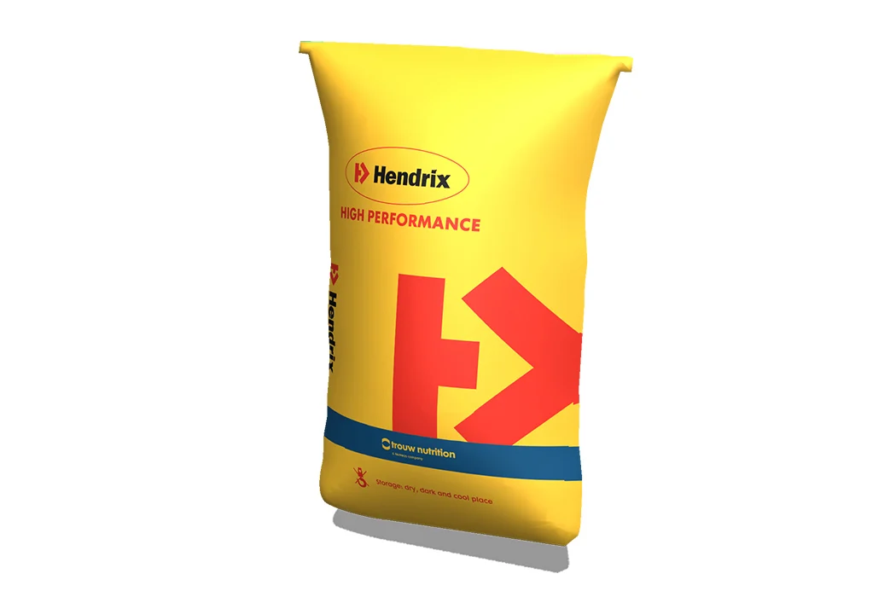
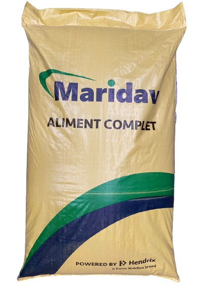

Concentré protéique Hendrix 31 %
Concentré protéique Hendrix Chair, formulé au plus strict des normes pour la fabrication d’aliments destinés aux poulets de chair et aux poulettes (pondeuses en phase d’élevage). Distribué par MARIDAV Côte d’Ivoire avec appui technique terrain.
Solution destinée aux ateliers de fabrication d’aliment à la ferme (FAF). Taux d’incorporation à définir selon votre programme avec un technicien MARIDAV.

- Éleveurs qui fabriquent leur aliment (FAF)
- Filières poulet de chair & poulettes
- Flexibilité sur les matières premières locales
Pourquoi choisir ce concentré
Qualité protéique maîtrisée
Formulation Hendrix précise et constante, conçue pour sécuriser l’apport en acides aminés de vos aliments.
Flexibilité matières premières
À incorporer avec vos céréales et sources énergétiques locales : vous gardez la main sur le coût de la ration.
Transversal chair & poulettes
Une même base pour vos ateliers poulets de chair et vos poulettes (pondeuses en élevage), selon le programme.
Adapté au contexte ivoirien
Pensé pour les pratiques et le climat tropical, avec des recommandations d’emploi par nos techniciens.
Appui Hendrix & MARIDAV
Conseil de formulation, plans de ration et suivi des performances par l’équipe technique MARIDAV.
Élevages & ateliers ciblés
- Éleveurs fabriquant leur aliment à la ferme (FAF) sur poulets de chair.
- Élevages de poulettes / pondeuses en phase d’élevage.
- Ateliers de mélange cherchant flexibilité sur les matières premières.
- Structures travaillant avec Hendrix Genetics / Trouw Nutrition.
Badges
Fiche d’identité
Concentré protéique de la gamme Hendrix. Les valeurs nutritionnelles détaillées (protéine, énergie, acides aminés) figurent sur la fiche technique du lot — demandez-la à votre technicien MARIDAV.
| Paramètre | Valeur |
|---|---|
| Type de produit | Concentré protéique (gamme Hendrix) |
| Filières concernées | Poulets de chair & poulettes (pondeuses en élevage) |
| Mode d’emploi | À incorporer avec céréales / sources énergétiques (fabrication d’aliment) |
| Taux d’incorporation | Selon le programme de formulation — voir technicien |
| Conditionnement | Sac 50 kg |
| Partenaire technique | Hendrix Genetics / Trouw Nutrition |
| Valeurs nutritionnelles détaillées | Sur fiche technique (selon lot) |
Comment l’utiliser
Définir la formule cible
Choisir la filière (chair ou poulette) et la phase visée. Notre équipe vous aide à cadrer la formule.
Incorporer le concentré
Mélanger le concentré 31 % avec vos céréales et sources énergétiques, au taux d’incorporation du programme MARIDAV.
Contrôler & ajuster
Vérifier l’homogénéité du mélange et suivre les performances ; ajuster avec votre technicien selon les résultats.
Stocker les sacs dans un local sec, ventilé, à l’abri des nuisibles (règle FIFO). Produit non médicamenteux.
Disponibilité Côte d’Ivoire
Sac 50 kg
Conditionnement standard pour les ateliers de fabrication d’aliment.
Livraison & retrait
Retrait Abidjan/Bouaké ou livraison palette/camion en régions sous 48–72 h.
Paiements
XOF, virement, Mobile Money pro. Contrats disponibles pour ateliers & intégrateurs.
Outils & accompagnement
Demandez la fiche technique du lot, un plan de ration adapté à votre élevage et nos guides de fabrication d’aliment.
Briefing express (48 h)
FAQ — Concentré 31 %
Termes clés
Témoignages terrain
« Avec le concentré Hendrix et l’appui formulation MARIDAV, on maîtrise mieux le coût de notre ration chair. »
Atelier FAF, Abidjan
Poulets de chair« Pratique de pouvoir utiliser la même base pour la chair et nos poulettes, avec un plan clair. »
Élevage mixte, Bouaké
Chair & poulettes« Le suivi technique nous aide à ajuster le mélange selon nos matières premières locales. »
Coopérative, Yamoussoukro
Fabrication d’alimentPartenaires & solutions associées
Appeler un technicien
Cadrez votre formule chair / poulette avec notre équipe.
(+225) 27 21 35 32 42Points de vente
Localisez les distributeurs MARIDAV CI proches de votre ferme.
Voir les distributeursProduits complémentaires

Plutôt prêt à l’emploi ?
Découvrez les aliments complets poulet de chair, sans fabrication.
Découvrir →